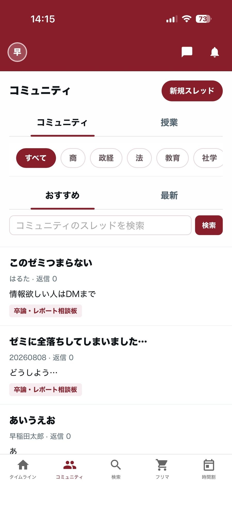
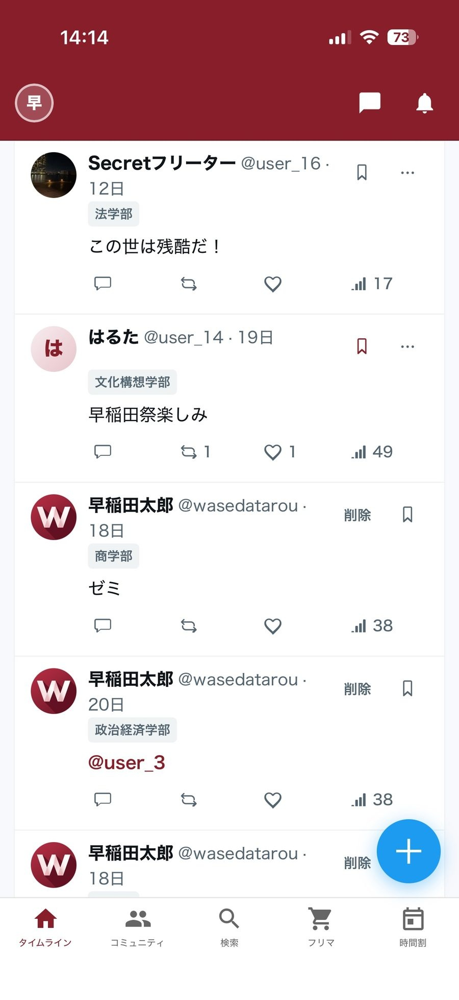
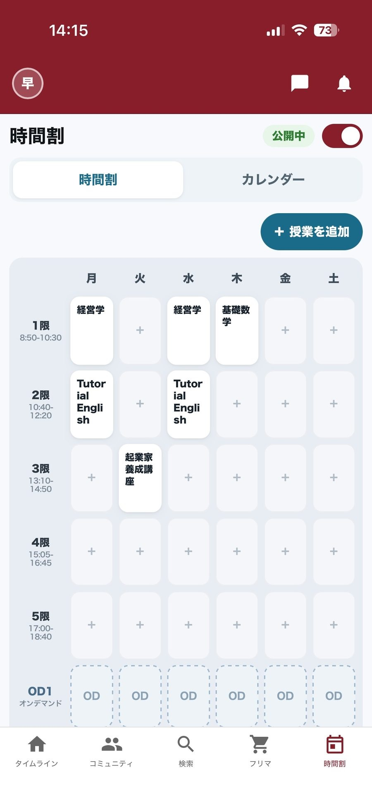
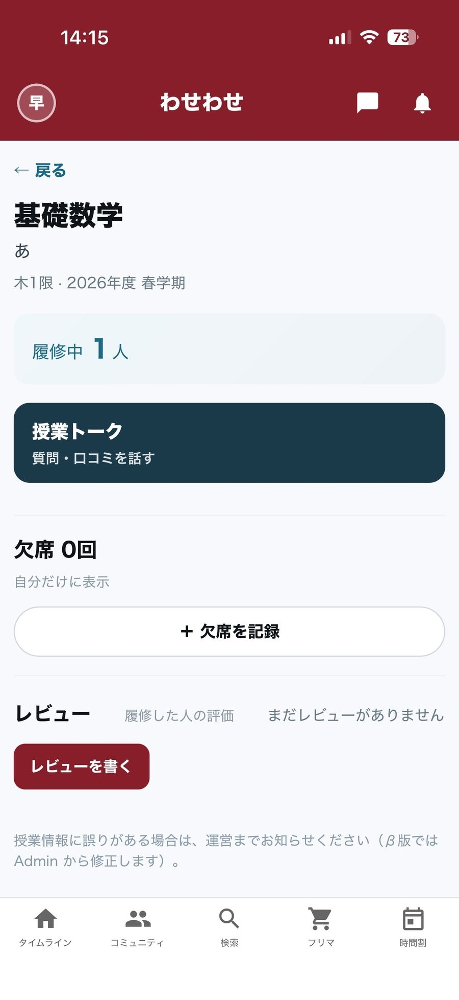
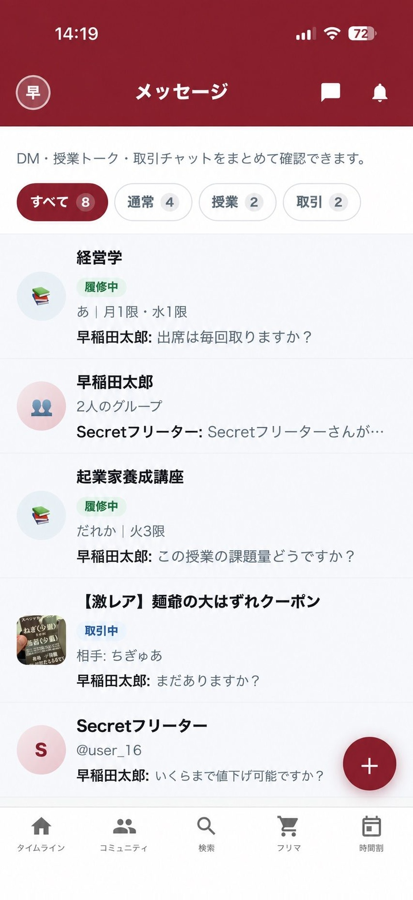
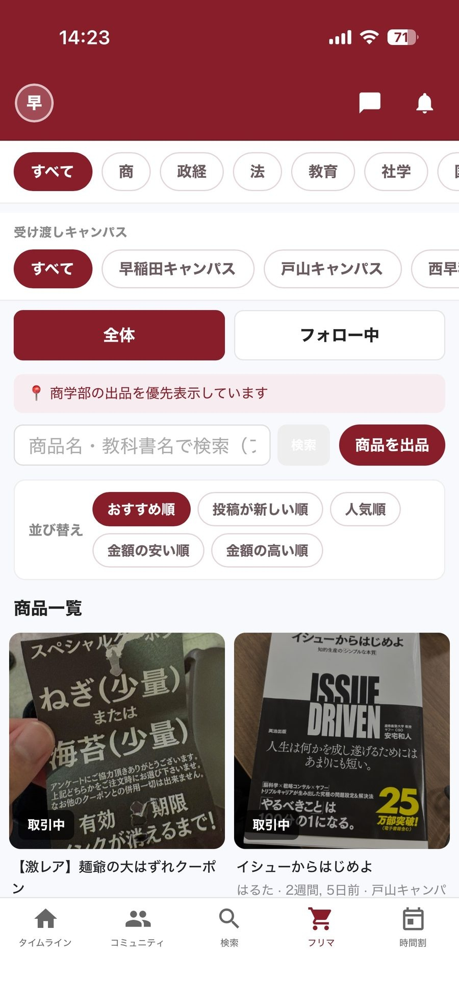

Hero中央 — コミュニティ
screens/community.jpg · 900×1957 · ヘッダー〜下部タブ完備

生画像（角丸なし）
Hero左 — タイムライン
screens/timeline.jpg · 900×1957 · ヘッダー〜下部タブ完備

生画像（角丸なし）
Hero右 — 時間割
screens/timetable.jpg · 900×1957 · ヘッダー〜下部タブ完備

生画像（角丸なし）
授業詳細・レビュー
screens/course.jpg · 900×1957 · ヘッダー〜下部タブ完備

生画像（角丸なし）
メッセージ
screens/messages.jpg · 900×1957（元 853×1844 を幅合わせ＋下端延長）

生画像（角丸なし）
フリマ
screens/fleamarket.jpg · 900×1957 · ヘッダー〜下部タブ完備

生画像（角丸なし）